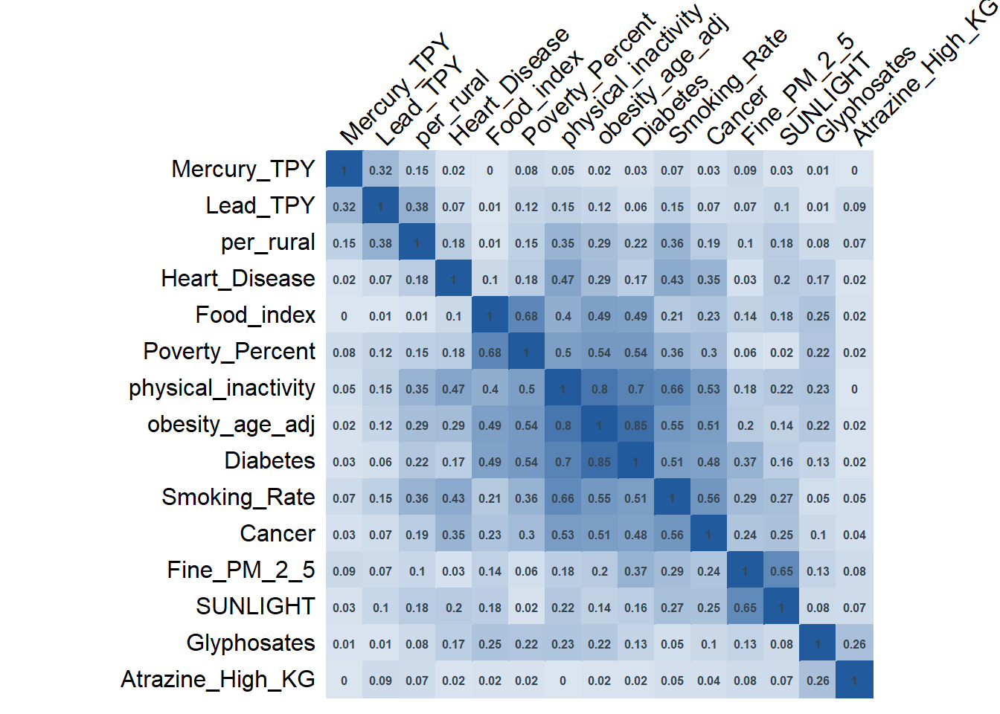
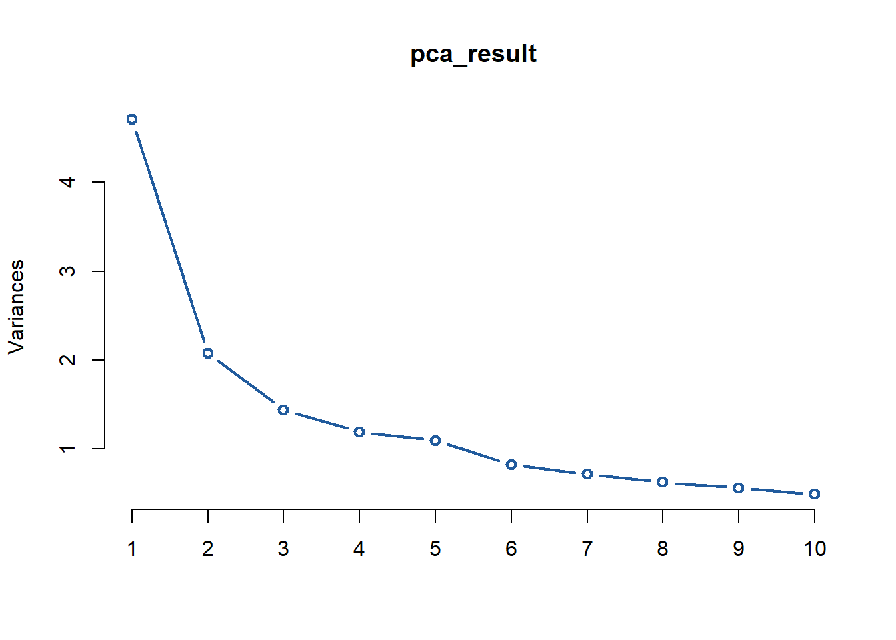
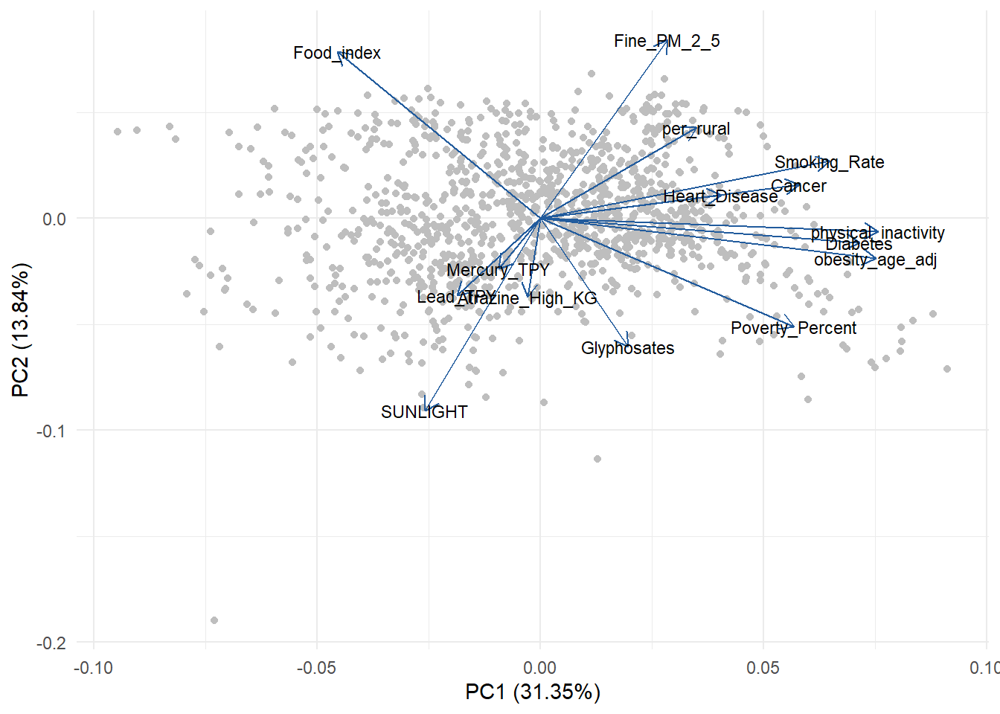

Across diverse industries and data science applications, Principal Component Analysis (PCA) offers a powerful solution to extracting valuable insights from complex datasets. The primary objective of PCA is to reduce the number of dimensions in the dataset while retaining most of the original information. This is directly applicable to big data scenarios where it is not feasible to rely on univariate analysis to find patterns, and redundancy in the data leads to inflated standard errors and poor model stability (Rahayu et al. 2017).
Developed by Karl Pearson in 1901, PCA utilizes linear algebra to transform the original dataset to a lower dimensional vector space of uncorrelated variables known as principal components. These are linear combinations of the original variables, and represent the information in a new coordinate system with axes aligned to the directions of maximum variability (Joshi and Patil 2020). Most of the data lies in this new feature subspace, where variance is used to measure the amount of information it contains. The quality of this subspace is assessed by comparing its variance to the total variance of the entire dataset, helping PCA identify the main structure in the data (Marukatat 2023).
PCA is often used during exploratory data analysis because this technique enables graphical visualization of the dataset. This can reveal unexpected relationships between the original variables that would otherwise be challenging to identify (Johnson and Wichern 2023). By reducing the dimensionality, PCA simplifies the data structure, making it easier to interpret and analyze. As a result, trends, patterns, and outliers can be identified in the new reduced-dimension dataset (Richardson 2009).
Additionally, PCA is a powerful tool to address the curse of dimensionality and the main problem areas associated with high dimensionality: data sparsity, multicollinearity, and overfitting (Altman and Krzywinski 2018). By projecting the data onto the principal components, the density of data points is increased in the new vector space which makes it easier to detect patterns and reduce noise. Multicollinearity is mitigated in the process because the principal components are uncorrelated to each other which improves stability and performance of the predictive models (Bharadiya 2023). With dimensionality reduction, models become simpler which improves generalization and reduces overfitting.
These benefits become valuable in many real-world applications, including image compression and signal processing. Lengthy image transfer over the internet can be improved by factoring image pixel matrices to extract the main patterns with minimal information loss (Ng 2017). For image processing tasks and particularly in edge-computing applications, PCA can file size by 60% with minimal information loss (Ali, Wassif, and Bayomi 2024). This is especially useful for real-time quality control systems with deployed ML models in advanced manufacturing environments. For signal processing, PCA can be used to identify the underlying structure and relevant features in signals amongst the noise.
In machine learning pipelines, PCA is often employed because reducing the number of dimensions decreases computational complexity, lowers memory requirements, and enhances algorithm efficiency. Additionally, PCA’s feature extraction capabilities allow for a better understanding and interpretation of the underlying data structure by identifying the most influential variables (Bharadiya 2023). It effectively filters out noise and irrelevant variations, enhancing the signal-to-noise ratio and improving the performance of subsequent analyses. Using PCA in both the training and deployment stages ensures consistent data transformation, maintains model stability, and boosts prediction speed by working with fewer, more informative features.
As with every technique, PCA has a few inherent limitations. It assumes linearity which means that if nonlinear relationships exist, PCA will not as effective because it may fail to capture the underlying structure in the data. However, modern variations such as Kernal PCA seeks to address this (Marukatat 2023). Interpretability is another considerable downside because the resulting principal components are combinations of the original variables. PCA is also sensitive to outliers, which can distort the variance-covariance structure and affect the quality of dimensionality reduction. However, there have been improvements to address outlier sensitivity such as Robust PCA which decomposes the data into a low-rank matrix and sparse matrix to separate signal and noise (Bharadiya 2023).
Additionally, PCA results in some degree of information loss, as the lower-dimensional representation will not retain all details from the original data. More specifically, in image compression, PCA can lead to loss of fine details and subtle features in images, especially when a high compression rate is applied. In addition, the computation of eigenvectors and eigenvalues, especially for large images, can be resource intensive and time-consuming (Do Espírito Santo 2012). Lastly, selecting the optimal number of components to retain is subjective; choosing too few can lead to significant information loss, while choosing too many can lead to overfitting or unnecessary complexity.
Despite these drawbacks, PCA is crucial in data science for its ability to simplify complex datasets, reduce computational costs, and enhance the interpretability of data by focusing on the most significant features. It offers a powerful tool for improving model performance, reducing noise, and uncovering hidden patterns, making it indispensable for efficient and insightful data analysis.
Methods
Linear Algebra Foundations
Principal Component Analysis (PCA) simplifies multivariate data by transforming the original potentially correlated variables into a smaller set of uncorrelated variables called principal components. The aim of PCA is to reduce the dataset’s dimensionality while preserving as much variability as possible. Because the variables will often have different scales or units, standardization is crucial to ensure each variable contributes equally to the analysis. Principal components are obtained by identifying the directions of maximum variability in the data. These components are orthogonal and uncorrelated, with each one capturing a specific amount of the data’s variance. This process creates a new coordinate system that simplifies the data structure while retaining its essential characteristics (Johnson and Wichern 2023).
While different methods can be used to determine the principal components, Singular Value Decomposition (SVD) is the most common due to its computational efficiency and numerical stability which makes it a popular choice for popular programming packages. SVD decomposes the data into three simpler matrices, making it possible to handle large datasets effectively. This decomposition allows for a more straightforward calculation of the principal components without explicitly computing the covariance matrix, which can be computationally expensive and numerically unstable. The ability to handle sparse and dense matrices further enhances its versatility and efficiency in diverse applications. These advantages make SVD a preferred method in popular programming packages, ensuring that PCA is performed quickly and accurately.
Overview of Algorithm with SVD:
Standardize the data
Ensure each variable contributes equally by having a mean of zero and variance of one. This requires that the variables are continuous. \[
X_{\text{standardized}} = \frac{X - \mu}{\sigma}
\]\(\mu\): mean, \(\sigma\): standard deviation of each variable
Perform Singular Value Decomposition (SVD)
Decompose the standardized data matrix into three matrices \(U\), \(\Sigma\), and \(V^T\). \[
X_{\text{standardized}} = U \Sigma V^T
\]\(𝑈\) and \(V^T\) are orthogonal matrices, so therefore \(U\) and \(V\) are also orthogonal. The diagonal matrix of singular values is represented by \(\sigma\) with values \(\sigma_i\) that are naturally sorted in descending order. Each column of \(𝑉\) represents a principal component (PC) which are orthogonal to each other in the transformed feature space. The number of PC’s initially generated are equivalent to the number of variables initially provided in the dataset.
Selection of principal components
The explained variance of each PC is represented by: \[
\text{variance\_explained} = \frac{\sigma_i^2}{\sum \sigma_i^2}
\] For each singular value \(\sigma_i\) in the matrix of singular values \(\Sigma\), compute \(\sigma_i^2\) and calculate the individual variance. The cumulative explained variance target is specified (typically 95%) as a criteria for PC selection. Determine the number of components needs to reach the desired cumulative explained variance.
Transform the data
Project the standardized data onto the selected principal components. \[
X_{\text{transformed}} = X_{\text{standardized}} V_{\text{selected}}
\] where \(V_{\text{selected}}\) contains the first number of components columns of \(V\). Once the data is transformed onto the selected PC’s, it is effectively reduced in dimensionality while retaining most of its original variability.
Assumptions and Practical Testing
This section covers the primary assumptions of PCA and details how they can be tested in real-world applications. A more accurate name for this section might be requirements since the effectiveness of PCA relies on satisfying these points.
1. Linearity
Assumption: PCA assumes that resulting principal components are linear combinations of the original variables. Nonlinear relationships may lead to low covariance values which can lead to an undervalued representation of their signficance.
Testing: Initial checks with scatter plots and correlation matrices can help identify linear relationships between variable pairs. While common, these methods require manual inspection which introduces the potential for the researcher to miss subtler non-linear patterns. Supplementing with statistical tests for linearity can provide a more robust assessment. Transformations can be applied to specific non-linear variables or alternative PCA methods can be utilized such as Kernal PCA (Marukatat 2023).
2. Continuous data
Assumption: To calculate principal components, data should be on a continuous scale: either interval or ratio. It should be mentioned that despite being ordinal, Likert Scales are often used because the distance between scale points are assumed to be approximately equivalent.
Testing: Reviewing column data types and value counts are practical methods for testing. Simple transformations can be applied to categorical data.
3. Data standardization
Assumption: There are three critical preprocessing steps: scaling, mean-centering, and outlier handling. Scaling standardizes the variance of each variable to ensure equal contributions. Mean-centering has a similar impact: ensuring that the principal components capture the true direction of maximum variance. Outliers can also distort the principal components, so they should be identified and handled appropriately. Together these methods prevent variables with larger measured values from dominating the principal components and skewing results.
Testing: Data will usually not arrive in a condition that meets this requirement. Luckily, statistical packages in common programming languages offer simple methods to scale and mean-center data. Outliers can be detected using a variety of distribution plots, but automated methods could be employed for larger datasets which is beyond the scope of this paper.
The dataset contains demographic, health, and environmental metrics for counties in Florida (FL) and Georgia (GA). Each row represents data for a specific county, and the selected columns are:
County: Name of the county.
State: State abbreviation (FL or GA).
obesity_age_adj: Age-adjusted obesity rate.
Smoking_Rate: Rate of smoking within the population.
physical_inactivity: Rate of physical inactivity.
Diabetes: Diabetes prevalence rate.
Heart_Disease: Heart disease prevalence rate.
Cancer: Cancer prevalence rate.
NATA_Cancer_11: National-Scale Air Toxics Assessment (NATA) cancer risk for 2011.
Poverty_Percent: Percentage of the population living below the poverty line.
We filtered the dataset to analyze selected variables for states in the deep south. We remove the columns to denote which county and state the data is from to create one complete dataset for the region.
Columns were selected to remove demographic fields related to gender, sex, and race and ambigious fields related to grouping.
Perform a series of checks to inspect for continuous variables, a requirement of effective PCA.
library(corrplot)cor_matrix <-cor(data, use ="complete.obs") # Handles missing values by using complete observationscolor_palette <-colorRampPalette(c("#215B9D", "#DCE6F1", "#215B9D"))(200) # bluecorrplot(abs(cor_matrix), method ="color",# type = "lower", order ="hclust",addCoef.col ="#36454F",number.cex =0.50,tl.col ="black",tl.srt =45, # No rotation for text labels# tl.pos = "d", # Position text labels at the bottom (x-axis)cl.pos ="n", # No color legendcol = color_palette,bg ="white")

Code
# ggpairs(data)
The correlation matrix plots show enough of a relationship between variables to meet the assumption of linearity.
Outliers analysis
Code
# melted_data <- melt(filtered_data)# # Create boxplots for each variable# ggplot(melted_data, aes(x = variable, y = value)) +# geom_boxplot(outlier.colour = "red", outlier.shape = 16, outlier.size = 2) +# theme_minimal() +# labs(title = "Boxplots for Each Variable",# x = "Variable",# y = "Value") +# theme(axis.text.x = element_text(angle = 45, hjust = 1))
Run Principal Component Analysis
Code
pca_result <-prcomp(data, center =TRUE, scale. =TRUE)pca_summary <-summary(pca_result)importance <-as.data.frame(pca_summary$importance)importance <-t(importance) # transpose to make cleanercolnames(importance) <-c("Std Dev", "Proportion", "Cumulative Var")importance
plot(pca_result, type ="l", col ="#215B9D", lwd =2)

Elbow method
note: from library (ggfortify::autoplot)
Biplot
Code
# biplot(pca_result, # col = c("grey", "#215B9D"), #"#D3D3D3"# cex = 0.3,# arrow.len = 0.15, # Length of arrows (default is 0.1)# main = "PCA Biplot") autoplot(pca_result, data = data,colour ='grey', # Color for pointsloadings =TRUE, # Show loadingsloadings.colour ='#215B9D', # Color for arrowsloadings.label =TRUE, # Show labels for loadingsloadings.label.colour ='black', loadings.label.size =3) +# Increase the size of the labelstheme_minimal() +# Use a minimal theme for cleaner appearancetheme(legend.position ="none") # Remove legend for simplicity

In one of these applications, discuss how PCA aids in building more robust statistical models by reducing multicollinearity and enhancing model interpretability. Compare VIF (variance inflation factor) before and after PCA.
Application 2: Image Compression
New example. No scree plot or biplot because pixels. Results to focus on memory reduction and maintaining equivalent level of performance. This will be similar to appl 1 + 2 but without going into as much detail for techniques already demonstrated.
Conclusion
Summary, reflections, future discissions
References
Ali, Ibrahim, Khaled Wassif, and Hanaa Bayomi. 2024. “Dimensionality Reduction for Images of IoT Using Machine Learning.”Scientific Reports 14: 7205. https://doi.org/10.1038/s41598-024-57385-4.
Bharadiya, Jasmin Praful. 2023. “A Tutorial on Principal Component Analysis for Dimensionality Reduction in Machine Learning.”International Journal of Innovative Research in Science Engineering and Technology 8 (5): 2028–32. https://doi.org/10.5281/zenodo.8002436.
Johnson, Richard, and Dean Wichern. 2023. Applied Multivariate Statistical Analysis. Pearson.
Joshi, Ketaki, and Bhushan Patil. 2020. “Prediction of Surface Roughness by Machine Vision Using Principal Components Based Regression Analysis.”Procedia Computer Science 167: 382–91. https://doi.org/10.1016/j.procs.2020.03.242.
Marukatat, Sanparith. 2023. “Tutorial on PCA and Approximate PCA and Approximate Kernel PCA.”Artificial Intelligence Review 56: 5445–77. https://doi.org/10.1007/s10462-022-10297-z.
Rahayu, S., T. Sugiarto, L. Madu, Holiawati, and A. Subagyo. 2017. “Application of Principal Component Analysis (PCA) to Reduce Multicollinearity Exchange Rate Currency of Some Countries in Asia Period 2004-2014.”International Journal of Educational Methodology 3 (2): 75–83. https://doi.org/10.12973/ijem.3.2.75.